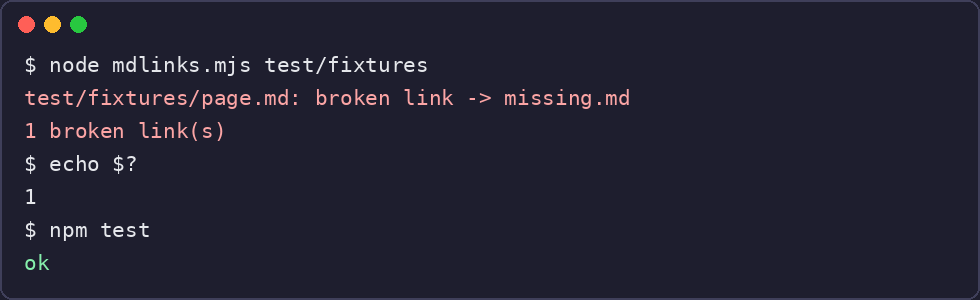

A tiny CLI that finds broken links in your Markdown
mdlinks is a small command-line tool that finds broken relative links in Markdown files. Point it at a folder or a single file and it reports every relative link whose target does not exist. No dependencies, Node 18 or later, about 40 lines.
The code is on GitHub: https://github.com/ido-lempert/mdlinks - one file, one test, done.
How it works: one regular expression reads inline links like [text](path). The tool skips web URLs, #anchors and anything inside fenced code blocks, resolves each remaining target relative to the file that contains it, and checks that the file exists. It exits with code 1 when it finds a broken link, so it can run in CI and fail the build.

The test plants a broken link in a fixture and expects exit code 1. I ran npm test on a fresh clone and it passes: the planted link is found, the good links are ignored. Pointing the tool at its own repository finds exactly the planted fixture link and nothing else.
What it does not do: it checks that the target file exists, not that a #heading anchor inside it exists. Reference-style links ([text][id]) are not read. Both are stated in the README; for a small docs folder the file check is usually the check that matters.